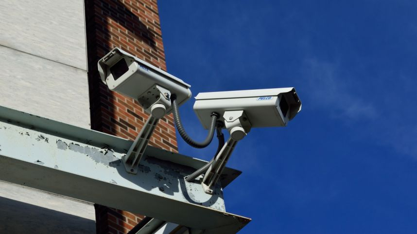

Welcome to vaizdo-kameros
Vaizdo kameros video filmavimui | el. parduotuvėje RDE.LT
2020.10.27 11:24Internetinė parduotuvė www.rde.lt Laimėk elektrinį paspirtuką Naujienos Prekių pristatymas Mokėjimo būdai Naudinga informacija Kontaktai +370 700 77772 | | [email protected] | Prekių krepšelis Prekių krepšelyje 0 Pažiūrėti krepšelį Prekių kategorijos IT produktų išpardavimas Kompiuterinė technika Televizoriai Mobilieji telefonai ir jų aksesuarai Fotoaparatai ir vaizdo kameros Veidrodiniai fotoaparatai (13) Objektyvai (452) Sisteminiai fotoaparatai (85) Skaitmeniniai fotoaparatai (116) Momentiniai fotoaparatai (50) Vaizdo kameros (13) Veiksmo kameros (83) Dronai (41) Fotografijos įrangos priedai Skaitmeniniai rėmeliai (18) Vaizdo ir garso technika Stambioji buitinė technika Montuojamoji buitinė technika Smulkioji buitinė technika Žaidimų kompiuteriai ir jų priedai Grožis ir sveikata Riedžiai ir paspirtukai Auto prekės ir navigacija Išmanūs namai Namams ir sodui Aksesuarai Visos internetinės parduotuvės kategorijos Prekių atsiėmimo punktas S. Konarskio g. 2 - 99 Kontaktai SONY, CANON, PANASONIC, JCV vaizdo kameros internetinėje parduotuvėje RDE.LT.
1) Filmavimo raiška – vienas iš svarbiausių kiekvienos vaizdo kameros parametrų. Pavyzdžiui, filmavimas FULL HD raiška (1920x1080) leis Jums sukurti aukštos kokybės detalius vaizdo įrašus.
2) Vaizdo kameros filmavimo dažnis užtikrina vaizdo įrašo sklandumą. Filmuojant 50 kadrų per sekundę ir didesniu dažniu vaizdai bus neišplaukę, net jei tuo metu važiuosite automobiliu.
3) Vaizdo kamera su jutikliniu ekranu, valdomu pirštų prisilietimais, patiks daugeliui vartotojų. Juk tai be galo ir patogu ir šiuolaikiška.
4) Vaizdo kameros gali ne tik filmuoti, bet ir fotografuoti aukšta raiška, todėl Jums nereikės su savimi nešiotis papildomo skaitmeninio fotoaparato.
5) Vaizdo kameros su „Wi-Fi“ moduliu gali be jokių laidų bendrinti vaizdo bylas su Jūsų nešiojamuoju kompiuteriu ar išmaniuoju telefonu.
6) Projektorius vaizdo kameroje – dar viena išskirtinė ir pažangi technologija, leisianti peržiūrėti filmuotą medžiagą bet kur, kur rasite laisvą plotą, pavyzdžiui, namų ar biuro sieną. Pradžia Fotoaparatai ir vaizdo kameros
Vaizdo kameros
Prekių 18 iš 13 galimų Sony HDR-CX240EB vaizdo kameraPalyginti Kaina: 185.88 € Į krepšelį Sony HDR-CX405B vaizdo kamera
Palyginti Kaina: 212.12 € Į krepšelį JVC GZ-RX625BE vaizdo kamera
Palyginti Kaina: 310.99 € Į krepšelį Sony HDR-CX450B vaizdo kamera
Palyginti Kaina: 358.68 € Į krepšelį Kodak SP360 4k Extrem Kit Black vaizdo kamera
Palyginti Kaina: 399.54 € Į krepšelį Kodak VR360 4K White vaizdo kamera
Palyginti Kaina: 460.49 € Į krepšelį Sony HDR-CX625B vaizdo kamera
Palyginti Kaina: 462.08 € Į krepšelį Sony HDR-PJ620B vaizdo kamera
Palyginti Kaina: 499.99 € Į krepšelį Kodak VR360 4K Ultimate Pack White vaizdo kamera
Palyginti Kaina: 602.99 € Į krepšelį Sony FDR-AX43 vaizdo kamera
Palyginti Kaina: 618.99 € Į krepšelį Kodak SP360 4k Dual Pro Kit Black vaizdo kamera
Palyginti Kaina: 631.99 € Į krepšelį Sony FDR-AX53 vaizdo kamera
Palyginti Kaina: 827.73 € Į krepšelį Sony FDR-AX100 Black vaizdo kamera
Palyginti Kaina: 1699.99 € Į krepšelį Prekių 18 iš 13 galimų RDE.LT. © 2020 UAB MK TRADE LT Apie autorių teises Lyginamos prekės 0 Palygink dabar Pašalinti viską Prekių pristatymas | Atsiskaitymo būdai | Prekių atsiėmimo punktas Cookies Sutinku Mūsų tinklapyje naudojami slapukai, jie padeda mums padaryti svetainę patogesnę. Sužinoti daugiau .
